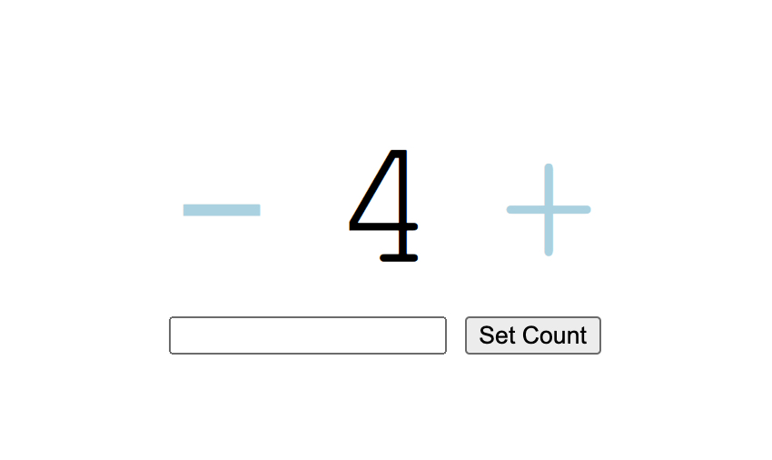

13. Клиент-серверное приложение
Теперь наше приложение разделено на сервер и клиент. Клиент - это то что исполняется в браузере пользователя: скрпиты, стили, разметка и т.д. Сервер - это то что исполняется на удалённой машине. Сервер обрабатывает входящие от клиента запросы и хранит данные.
Создадим простенькое приложение каунтер: обычный счётчик с кнопками + и -. Если нажать на сам счётчик, то пусть он будет сбрасываться в 0. Также внизу счётчика будет текстовое поле и кнопка для изменения значения счётчика на произвольное:

Пример реализации такого каунтера с подробными комментариями смотрите здесь https://github.com/mrThomasTeller/prog-from-scratch-counter. Также вы можете запустить его на своём компьютере, для этого скачайте эту папку к себе и запустите:
npm install
node server.js
Затем откройте в браузере адрес “http://localhost:3000/”.
Домашнее задание
Сделайте клиент-серверное приложение “Список задач”.
Сначала нам нужно установить express для создания сервера, а также модуль body-parser, который пригодится нам позднее.
npm install express --save
npm install body-parser --save
Также не забудьте установить поддержку автодополнения для node.js:
npm install @types/node
Задание 13.1
Сделайте так, чтобы при заходе на адрес http://localhost:3000/ открывалось приложение “список задач”. Затем отошлите на сервер запрос “get-todos”, в ответе на запрос должен быть массив задач, который вы затем должны отобразить на экране.
Задание 13.2
Реализуйте остальные функции приложения Todos.